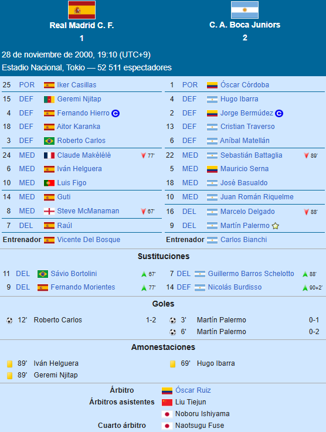

⬅ Inicio
LA INTERCONTINENTAL
Torneo
La Copa Intercontinental 2000 fue la 39na edición del torneo. Enfrentó al Real Madrid C. F. como campeón de Europa contra Boca Juniors como el campeón de Sudamérica.
Final

Desarrollo
El partido fue sorpresivo y poco usual dado que los tres goles se dieron en los primeros doce minutos de juego. Primero, con pase de Delgado desde la izquierda, Palermo la empujó en el límite del área chica. Unos minutos después, Juan Román Riquelme daría un gran pase al mismo jugador para que otra vez marcara, colocándola abajo a la izquierda del arquero Iker Casillas. Siete minutos luego vino el descuento: la pelota le quedó a Roberto Carlos, la paró de pecho y sacudió el ángulo derecho de Córdoba con un zurdazo fenomenal. Luego el transcurso del partido fue más o menos parejo, con alguna que otra chance más para el equipo español, mientras que Boca cuidó la pelota a través de Riquelme.